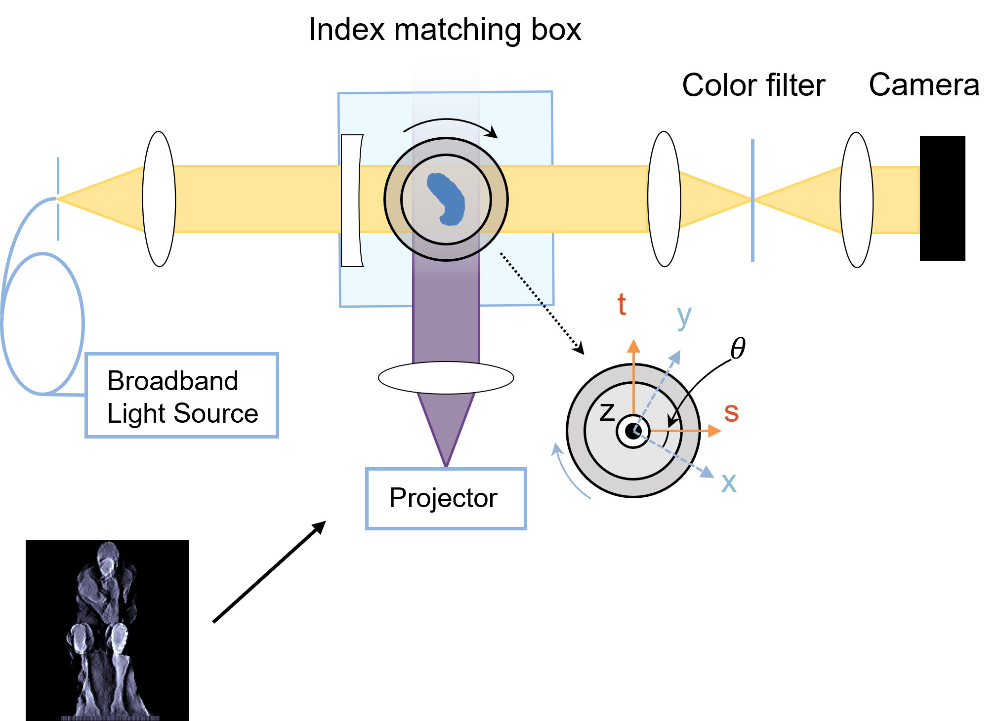

Successful application of computed axial lithography requires accurate termination of the tomographic light exposure period at a moment when the boundary of solidified material within the printing volume matches the target geometry most closely. Because realizable dosing profiles do not deliver a sharp cut-off of dose at the surface of the target geometry, an exposure time that is too long can lead to unwanted expansion of the gelled region and therefore to geometrical errors. One way of probing the emergence of the printed geometry is via the increase of refractive index that typically occurs as the photosensitive material polymerizes. In some materials, this refractive index change is quite pronounced and is visible to the unaided eye via scattering and refraction of light within the printing volume. In other materials, the property change is more subtle and needs optical amplification to be detectable.
We engineered a tomographic color schlieren system that can reconstruct a 3D map of the refractive index inside the printing volume in real time (currently at a ~1 Hz frame rate, which is fast enough to determine the optimal print termination time). The method senses spatial variations of refractive index across the diameter of the printing volume by mapping refracted rays of non-polymerizing illumination to a color spectrum filter. The hue of the image captured at a camera encodes the magnitude of the spatial gradient of refractive index. Through temporal interpolation and tomographic reconstruction, the captured color video frames can be transformed into a 3D map of refractive index which informs the duration of the printing process. We recently used the technique to study “dark polymerization” within the printing volume: the continuation of material conversion after the end of the illumination period. This significant phenomenon suggests that integration of materials modeling, metrology, and optical projection generation is needed for the highest geometrical fidelity. Eventually, we anticipate this imaging technique being used in a feedback system that can update in real time the projected images of polymerizing light to compensate for any geometrical errors in the emerging geometry.
